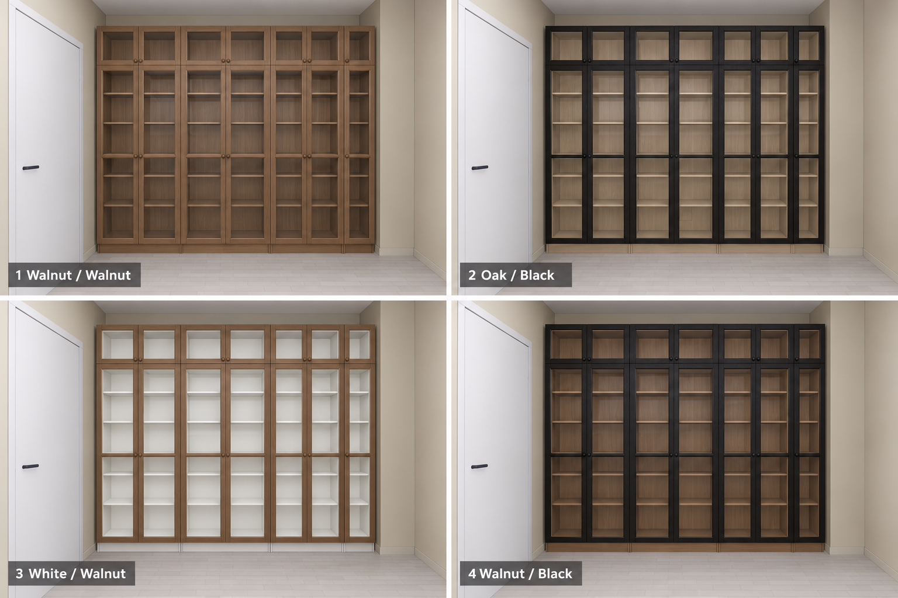

Image-generated interior proposals · Current HView planFour complete room combinations.
Each set shows the salon, living/work room and master bedroom at 6500 K and 2700 K. The labelled palette is attached below every downloadable image, so fabric, curtain, BILLY body/door and desk finishes are identifiable.
My first choice: 2 · Olive and Oat. Pale oak BILLY bodies and black wood-effect doors keep definition beside the dark furniture while lightening the far end of the salon. Burgundy and Flax is the reference alternative for retaining the existing wine upholstery.
Fixed: salon Jotun 1876 #D4CBB9, existing room layout and fixtures, bedroom cream joinery/brass handles. Master curtain: one panel on the wardrobe side; no left panel. BILLY remains three 80 cm cases plus one 40 cm case with matching extensions and clear glass. These are render-only proposals; the saved plan is unchanged.
BILLY finishes up close

1: Walnut / Walnut · 2: Oak / Black · 3: White / Walnut · 4: Walnut / Black. Clear glass throughout.